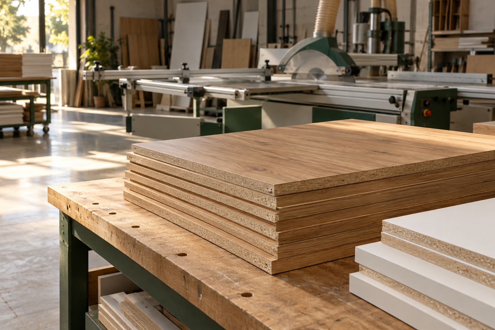

Corte sob medida
Envie as medidas das peças e solicite o corte dos painéis conforme a necessidade do projeto.
DO SEU PLANO PARA A BANCADAA PARCERIA POR TRÁS DO SEU MÓVEL
MDF, corte sob medida e acabamento para você chegar à oficina com tudo pronto para produzir.
FERRAMENTAS PARA O SEU PROJETO
Do projeto à montagem.
Mais produtividade para a sua rotina.

SEU PROJETO PRONTO PARA MONTAR
Conheça nossa Central de Serviços →A MATÉRIA-PRIMA DAS SUAS IDEIAS
Do branco que combina com tudo ao amadeirado que muda o ambiente. Encontre seu ponto de partida.
Seleção ilustrativa. Padrões, espessuras e disponibilidade serão confirmados no atendimento.
EQUIPE SUA MARCENARIA
Encontre equipamentos para sua rotina. Consulte especificações, disponibilidade e condições com nossa equipe.
SUA OFICINA, UM PASSO À FRENTE
Você cuida do projeto e da montagem. Conte com a Ferramad para preparar os materiais da sua próxima entrega.
Pedir acesso ao CortecloudEnvie as medidas das peças e solicite o corte dos painéis conforme a necessidade do projeto.
DO SEU PLANO PARA A BANCADAInclua as bordas na sua solicitação e consulte os padrões e opções de acabamento.
O DETALHE FAZ PARTE DO TODOCombine painéis e acabamentos em um orçamento pensado para as peças que você precisa produzir.
TUDO COMEÇA COM A ESCOLHA CERTADO PROJETO À PRODUÇÃO
Converse com nossa equipe →ANTES DE ENVIAR
Informe comprimento, largura, quantidade, padrão e espessura de cada peça. Identifique as peças pelo nome ou número.
Marque quais lados recebem fita de borda e indique o sentido do veio nos padrões amadeirados.
Informe ferragens, posições dos furos e anexos de referência. Confira os dados antes de enviar; a equipe validará a execução e o prazo.
SIMPLES, DO JEITO QUE PRECISA SER
Uma conversa bem alinhada faz diferença em cada peça.
Escolha os materiais e informe as medidas, quantidades e detalhes do projeto.
Confirme padrões, serviços, valores e prazo com a equipe antes de aprovar.
Combine a retirada ou entrega e siga para a produção dos seus móveis.
SOBRE NÓS
Quem trabalha com marcenaria sabe: cada medida importa. A Ferramad conecta materiais e preparação de peças à rotina de quem transforma projetos em móveis.
Nosso foco é ajudar você a avançar do painel à montagem, com uma solicitação clara e um atendimento próximo das necessidades da sua oficina.
Conte com a gente no próximo projetoVAMOS COMEÇAR?
Peça o link de acesso à nossa equipe, monte seu projeto no Cortecloud e receba o orçamento após a conferência.
Do projeto ao orçamento
1. Peça seu acesso à equipe.
2. Monte o projeto no Cortecloud.
3. Receba o orçamento após a conferência.
SEU PROJETO, PASSO A PASSO
Da preparação das peças à entrega, acompanhe cada atualização do seu projeto em um só lugar.
Situação atual, previsão e histórico de atendimento.
SUA OFICINA CONECTADA
Acompanhe seu histórico e solicite novamente com os ajustes do próximo projeto.
Primeiro acesso? Solicite um convite à equipe. Se esqueceu a senha, peça um novo convite.
Para dúvidas e informações, fale com nossa equipe.